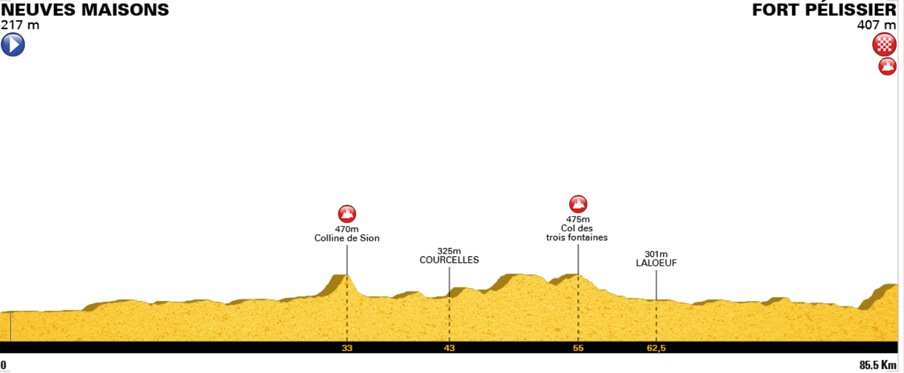
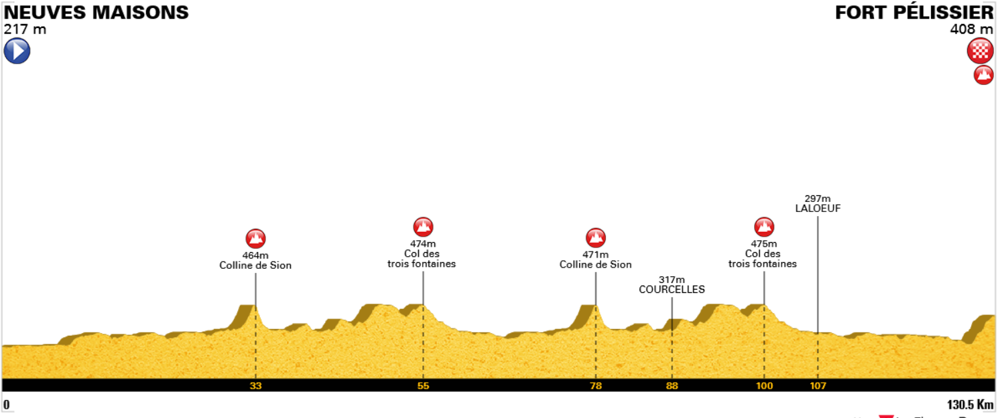

Parcours : 99km et 142km
Direction le sud sur un circuit empruntant partiellement des routes inédites, direction la Colline de Sion
qui sera abordée cette fois-ci par Vaudémont et le Mont Barrès.
Au sommet, la superbe vue sur la chaîne des Vosges sera au rendez-vous si le temps le permet.
Ravitaillement
Le grand parcours aura l’honneur de gravir à deux reprises la colline
Parcours vallonné et exigeant
Le retour vers Neuves-Maisons s’effectuera en passant par une jolie route panoramique inédite et
une dernière belle bosse pour une arrivée inédite au Fort Pélissier de Bainville sur Madon
Le parcours

Petit parcours
Strava petit parcours

Grand parcours
Strava grand parcours

5 derniers kilomètres